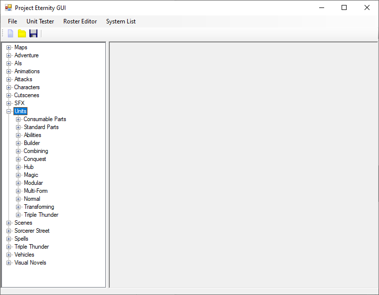

Creating Units
The first thing you’ll notice it that the Units node contains a lot of sub components so let’s go over the related to SRW. First you have the Parts, which you can equip on different units. Then you have Abilities which you directly assign when creating a new unit. After that you have many different unit types. Normal is the regular SRW unit with no gimmick. Multi-Form, Combining and Transforming are your usual fancy SRW units and will require you to pick other units to work. You can remove the types you don’t need be removing the corresponding editor from the Editor folder and then from the Units folder (in the same folder as the GUI, not the one in the Content folder). If you want to create a new Unit, you can right click the Normal node or a folder inside it and selecting New. Likewise if you prefer you can use your file explorer instead of using the editor to copy/paste files. Just reopen the GUI after you’re done.